Code
library(tidyverse)
library(ggsci)
library(pins)
library(patchwork)
library(gt)A look into investment income with simulations
Adam
November 11, 2025
There is common adage these days that goes something like this: the wealthy, and billionaires in particular, are not genius investors, they just have more rolls of the dice at the investment table than you do. Let’s say you work and work, eventually saving up $100,000 to invest in a startup that you just know is going to become the next Apple. That’s great, and you might even be correct and make a lot of money, but those that start wealthy, according to the adage, will invest $100,000 in the next Apple, but they’ll also be able to invest in 10, 20, 30 other startups that may or may not hit it big too. Another way you hear this is as throws of a dart- you have one dart to hit the bullseye, someone else has 10 darts to hit it. Who do you think is going to perform better on average?
This adage has always stuck in the back of my mind as something that is potentially true, but also something that I have a hard time visualizing. It would be great if I could have concrete numbers that I can look at and analyse to really intuit what exactly this starting advantage means in terms of the resultant wealth generated. Well, lucky for me I love exploring topics via simulations. Maybe it’s just me, but often I find results from statistics and probability confusing and difficult to really parse and internalize, but when I can build a simulation, even though it’s necessarily simplified, I can flesh out a deeper understanding of the mechanics of what is taking place. Let’s figure out how we’re going to approach this.
The core of the adage, I think, rests in the premise that more investment ‘throws’, or attempts, are a determinative factor in who becomes a billionaire, not intelligence, investing skill, hard work or whatever other performance based metric you want to cite. The number of investment attempts are a product of whatever starting capital you are fortunate enough to either have or be able to save/raise. So the spirit of the question is really - given all else equal, is who becomes ultra-wealthy (say worth more than $100 million dollars) determined mainly by how much initial investment capital they have? First, let’s pin down a little more firmly how the simulation will work and then state the numerous assumptions we have to make in this sort of analysis.
Very broadly, the simulation can be broken down into two parts. One part that simulates a single investment outcome and another part that uses the single investment logic to make repeated investments based on certain conditions. The first part, called make_one_investment, is basically just a person who is repeatedly throwing a n-sided die where n is the number of possible investment outcomes. make_one_investment is an extremely simple function that takes 3 arguments:
make_one_investment <- function(returns_vector = c(0, 1, 3, 5, 10, 20),
probs_vector = c(.64, .18, .06, .07, .03, .02),
investment){
# Given a numeric initial investment amount, return the amount of income generated by the investment
assertthat::assert_that(is.numeric(investment), msg = "investment must be numeric")
assertthat::are_equal(length(returns_vector), length(probs_vector), msg = 'returns_vector and probs_vector must be the same length')
sample(x = returns_vector, prob = probs_vector, size = 1, replace = TRUE) * investment
}Each time make_one_investment is called, it will return the amount of money you got back from a single investment attempt. If your investment was $10 and you hit a return vector of 10, make_one_investment would return a value of 100. This simple function is the core of the investment simulation. It will allow us to generate thousands of simulations based on whatever investment table1 we are interested in at the moment.
A single investment throw is not what we are after though. We want to be able to examine a series of investments and, at the end of some period of time, examine how much that investor made or lost. To simulate that, we need some more simulation scaffolding. The following investment_sim code might look intimidating at first, but it is so simple even a dummy like me could write it. Here’s the entire function, but I’ll break it down piece by piece below.
investment_sim <- function(investment_capital, investment_size,
reinvestment_perc = NULL, max_rounds = 250,
sim_id = 1, ...){
# Given an initial amount of investment capital, an initial investment size and an
# amount of profits to reinvest, return a simulated investment history
# Amount you've made from the investments + capitalized interest after every 6 funding rounds
total_profit <- 0
# Capital you are willing to invest
bankroll <- investment_capital
# Total companies funded
companies_funded = 0
# Total rounds of funding
funding_rounds = 0
# Initialize a list; stores the results of each round
round_results <- list()
# You keep investing while your backroll is >= the minimum investment size &
# you haven't hit the max number of investment rounds
while(bankroll >= investment_size & funding_rounds < max_rounds){
# # how many investments you can afford with current bankroll
# NOT USED IN CURRENT SIMULATION
# num_of_investments <- floor(bankroll/investment_size)
# leftover bankroll after subtracting out cost of investment
remainder_bankroll <- bankroll - investment_size
# This is the actual simulation core. Make one investment;
# Returns according to make_one_investment investment returns table
investment_revenue <- make_one_investment(investment = investment_size, ...)
# Calculate profit from investments
profit <- investment_revenue - investment_size
# Iterate # of companies funded
companies_funded <- companies_funded + 1
# Iterate # of rounds into simulation
funding_rounds <- funding_rounds + 1
# Every 6 rounds, capitalize the total profit made @5%.
if(funding_rounds %% 6 != 0){
# If the investment generated a profit, add (1- reinvestment_perc) * profit
# to your total_profit
# Add the reinvestment_perc * profit to your bankroll
if(profit > 0){
total_profit <- total_profit + (profit * (1 - reinvestment_perc))
bankroll <- remainder_bankroll + investment_size + (profit * reinvestment_perc)
# If the investment generated a loss(or was flat),
# add remaining bankroll + any investment revenue(should be = investment cost)
} else{
bankroll <- remainder_bankroll + investment_revenue
}
# Performs the same calculations as above, but triggers on every 6th funding round
# and capitalizes interest @5% on total_profits
} else{
if(profit > 0){
total_profit <- total_profit + (profit * (1 - reinvestment_perc))
bankroll <- remainder_bankroll + investment_size + (profit * reinvestment_perc)
} else{
bankroll <- remainder_bankroll + investment_revenue
}
# Profit capitalized every 6th funding round @ 5%
total_profit <- total_profit * 1.05
}
# If your total profit is at least 10 times greater than your initial investment capital
# AND your current bankroll is less than the amount needed to make an investment:
# take one investment worth of money out of your total_profit account and transfer
# it into your current bankroll so you can continue to invest
if(total_profit / investment_capital >= 10 & bankroll < investment_size){
total_profit <- total_profit - investment_size
bankroll <- bankroll + investment_size
}
# storing the results of each 'round'
round_results[[funding_rounds]] <- tibble(
sim_id = sim_id,
round = funding_rounds,
start_capital = investment_capital,
investment_size = investment_size,
# round level results
revenue_for_round = investment_revenue,
profit_for_round = profit,
# aggregate level results
total_realized_profit = total_profit,
current_bankroll = bankroll,
total_companies_funded = companies_funded,
)
}
# bind all the simulation results into one tibble
return(purrr::list_rbind(round_results))
}First, I need to define some variables:
investment_sim <- function(investment_capital, investment_size,
reinvestment_perc = NULL, max_rounds = 250,
sim_id = 1, ...){
# Given an initial amount of investment capital, an initial investment size and an
# amount of profits to reinvest, return a simulated investment history
# Amount you've made from the investments + capitalized interest after every 6 funding rounds
total_profit <- 0
# Capital you are willing to invest
bankroll <- investment_capital
# Total companies funded
companies_funded = 0
# Total rounds of funding
funding_rounds = 0
# Initialize a list; stores the results of each round
round_results <- list()investment_capital: the total amount of starting capital the investor has to invest
investment_size: the amount of money invested in a single investment
reinvestment_perc: a decimal amount indicating the percentage of investment profits you’d like to transfer to your investment account with which to make further investments
max_rounds: a maximum number of investments/rounds of investments you want to make
sim_id: an identifier used to keep track of investors
Everything else in this first chunk is just initializing variables to keep track of the various quantities we are interested in. These quantities are summations from all the simulations rounds that have occurred so far. It is probably important to distinguish total profit and bankroll since the difference isn’t immediately obvious. Total profit is the total amount of profit accumulated from all investments, while bankroll is the amount of money currently available with which to make future investments. These are distinct quantities and do not overlap. At the very end of a simulation run they will be combined to give the total wealth/revenue from all investments.
Next, we have the functionality that allows us to simulate repeated investment rounds.
while(bankroll >= investment_size & funding_rounds < max_rounds){
# leftover bankroll after subtracting out cost of investment
remainder_bankroll <- bankroll - investment_size
# This is the actual simulation core. Make one investment;
# Returns according to make_one_investment investment returns table
investment_revenue <- make_one_investment(investment = investment_size, ...)
# Calculate profit from investments
profit <- investment_revenue - investment_size
# Iterate # of companies funded
companies_funded <- companies_funded + 1
# Iterate # of rounds into simulation
funding_rounds <- funding_rounds + 1
# Every 6 rounds, capitalize the total profit made @5%.
if(funding_rounds %% 6 != 0){
# If the investment generated a profit, add (1- reinvestment_perc) * profit
# to your total_profit
# Add the reinvestment_perc * profit to your bankroll
if(profit > 0){
total_profit <- total_profit + (profit * (1 - reinvestment_perc))
bankroll <- remainder_bankroll + investment_size + (profit * reinvestment_perc)
# If the investment generated a loss(or was flat),
# add remaining bankroll + any investment revenue(should be = investment cost)
} else{
bankroll <- remainder_bankroll + investment_revenue
}
} else{
if(profit > 0){
total_profit <- total_profit + (profit * (1 - reinvestment_perc))
bankroll <- remainder_bankroll + investment_size + (profit * reinvestment_perc)
} else{
bankroll <- remainder_bankroll + investment_revenue
}
# Profit capitalized every 6th funding round @ 5%
total_profit <- total_profit * 1.05
}This basically says, while
you should keep making investments. Within the while loop, you do the actual investing with the make_one_investment function, keeping track of the profit or loss from each investment. There are a couple important things that occur here as well.
Every investment round, we determine if the investment generated a profit or a loss. If it generated a profit, add the percentage of the profit you want to reinvest to your bankroll and add the rest to your total profit. If it generated a loss, update your bankroll to reflect the loss.
Every 6th round, we are going to say our total profits, which are sitting in some Vanguard style investment account, earn 5% interest and we update total profits accordingly.
Finally, in this last chunk, if our total profit is currently at least 10 times greater than whatever capital amount we started this whole thing with AND our bankroll is currently so low that we can’t make another investment, we will transfer money from our total profit account to our bankroll to allow us to make another investment. This is definitely a judgement call, but it seemed pretty reasonable to put a condition like this into the simulation. It didn’t seem particularly realistic that if someone had increased their initial capital by an order of magnitude or more that they wouldn’t transfer some of the profit they’d made to keep making investments.
if(total_profit / investment_capital >= 10 & bankroll < investment_size){
total_profit <- total_profit - investment_size
bankroll <- bankroll + investment_size
}
# storing the results of each 'round'
round_results[[funding_rounds]] <- tibble(
sim_id = sim_id,
round = funding_rounds,
start_capital = investment_capital,
investment_size = investment_size,
# round level results
revenue_for_round = investment_revenue,
profit_for_round = profit,
# aggregate level results
total_realized_profit = total_profit,
current_bankroll = bankroll,
total_companies_funded = companies_funded,
)
}
return(purrr::list_rbind(round_results))The last snippet is just saving the individual investment rounds into a data frame that gets spit out at the end of the full simulation. With this code, the loop is pretty simple. Do we have enough money to invest? If so, invest based on the given conditions. Tally up your investment results every time you invest. And then keep doing that until you run out of money or hit the maximum number of investments. That in a nutshell is how our investment simulation will work.
There are a ton of implicit or explicit assumptions and simplifications that I’m making that we should make very clear.
If our investor has enough money in their bankroll to make an investment-and the maximum number of investment rounds hasn’t been reached-then they will continue to make investments. Is this the optimal investment strategy? Almost certainly not, but I am not an investor, and rigging up some complicated investment logic is not really the point of this investigation. Remember we are interested in how results change when starting capital changes, so it’s more important that we implement a consistent strategy than an optimal one.
Our investment returns are totally determined by the investment table. As such all investors are playing by the same rules. If the probabilities of getting returns x, y, z are (.8, .19, .01), then those are the probabilities for everyone in that simulation. This most certainly is ignoring, at the very least, things like insider trading or just simply having access to better or more recent information about investments. As we will see when we add in the concept of a good investor, this ultimately doesn’t seem to make an enormous difference.
Our investment outcomes are immediately known. In reality, you invest in a startup and it might be a decade before you have any idea what the end result of that investment is. In our simulation, you instantly know and you collect that profit or loss. Then, if you are able, you move on to the next investment. This is completely unlike how you invest in the real world, but it’s a helpful simplification. We can think of these simulations as taking a birds eye omniscient view. At the end of our imaginary investors lives, we look at every investment they made and see how things panned out. One obvious disadvantage to this though is that this doesn’t allow for the concept of altering your investment amount in a company. In the real world, if you invested in a company and then a year later you were even more confident that it was going to generate large returns, you might invest more into the company. This is a perfectly reasonable thing to do, but it is not a feature implemented into our simulation.
Our investors live in a world with no taxes and extremely stable return rates. Neither of these conditions are true, but again, they are simplifying assumptions and I’m going to make them. An alternative approach I considered, but ultimately didn’t use, with respect to returns rates and probabilities was to draw them from a distribution for each investment throw. This would mean that each investment has a different set of returns and probabilities drawn from some prior distribution. I think there is probably some merit to this approach, but I leave it as a fun extension to explore for any readers. With regards to taxes, I considered implementing some tax scheme, but I didn’t want the simulation to become more about taxes that investment capital, so I ultimately left it out.
Our investors only choice is to invest or not to invest, and that is determined entirely by whether they have enough money to meet the investment size (and of course whether they’ve hit the maximum number of investments). In reality, an investor makes a ton of micro decisions. When do they want to cash out an investment? Do they want to invest more than the minimum in this investment because they are extra confident it will pay a high return? Do they want to go into debt(can they even?) to finance an investment? Do they have some way of leveraging this investment to increase their returns even more? None of these things are modeled by our simulation, but again that’s the point. This is a simplification so we can examine the role of starting capital under conditions where all these other factors don’t come into play.
Our investors invest serially-that is, they make an investment, get a return, and then make another investment. This is not at all how venture capitalists invest. They invest in 20 different companies at the same time and expect the ‘unicorn’ among them to be what grants them a windfall profit when most of the companies go bankrupt or otherwise fail. I played around with making many investments at one time, but ultimately decided to take the serial approach. It was simpler and the end results were more or less the same.
Our investors live in a world where if they want to invest in startup X, they can. We can have 100,000 investors all invest in the same startup and get those massive return numbers. In the real world it doesn’t work like this. A startup might have a handful or a couple dozen investors. Not everyone can be investor #1 at Apple/OpenAI/etc. This is a pretty important simplification, but integrating this sort of logic into the simulation would have required changing essentially the entire simulation setup.
There are dozens of other assumptions and simplifications I’m sure I’ve made, but the important thing to bear in mind is that that is OK. Is this a realistic investing scenario? Absolutely not! But it can still generate valuable information about the effect of starting capital on investment returns in an isolated scenario.
So we have a way to simulate investments and we have a general idea of how we’ve constrained our investing to try and focus on starting capital and its effect on results. Now we need to lay out the different criteria we are going to use in our simulations. Using the perform_sim function, I generated batches of simulations with the following criteria:
perform_sim <- function(num_sims, .starting_capital, .investment_size,
.reinvestment_perc, ...){
future_map_dfr(1:num_sims, .f = function(.x, ...){
investment_sim(investment_capital = .starting_capital,
investment_size = .investment_size,
reinvestment_perc = .reinvestment_perc,
sim_id = .x, ...)},
...,
.options = furrr_options(seed = 123))
}Each simulation batch consists of 100,000 investors
Investment Size: 1,000,000
Starting capital:
Reinvestment Percentage:
Investment Tables:
‘Good’ investor: Investors in a simulation are either normal investors who play by the rules of whatever investment table is in use in that simulation batch or they are ‘good’ investors. Good investors have 20% higher return probabilities for any return amount other than 0. For example, for a stingy investment table, a ‘good’ investor has the following investment table.
Each simulation has a maximum of 250 investment rounds.
I decided not to simulate every permutation of these variables(mainly for the sake of time), but I still wound up running 22 different simulations in total.
Now for the fun part! All told, we have simulated 2.2 million investors in a variety of scenarios. Sounds to me like we get to make some fun plots!
A good starting point is examining what I’m calling racing plots(even though I think racing plots are normally animated). In these plots, each grey line represents the investment results of a single investor round-by-round, with the red dotted line indicating $100,000,000 and the black dashed line indicating $1,000,000,000. The main use case for these racing plots is, I think, to get a sense of the growth rate of successful investors.
Looking at our 1x, 10x, and 20x starting capital variations, we immediately get a sense of the immense growth some investors will see. Remember, all of these investors are investing $1,000,000 per investment and starting with either $1,000,000, $10,000,000 or $20,000,000. Regardless of the starting capital, some investors in all the simulations accumulated over a billion dollars, with the five highest returns (lines colored with shades of blue) all easily hitting that mark. While all starting capital variations produced billionaires, the shape and spread of the plots tells us that they did not do so at the same rate. Looking at the right side of the plot, the top plot with 1x investment results clearly has a wider spread and has fewer lines above the billion dollar dashed line. The higher, and narrower, band of grey investor lines in the 10x and 20x plots indicate that, on average, the more starting capital you begin investing with, the higher your final income will be.
It is extremely important to clarify a couple things right away though. These racing plots obfuscate just how few investors are making these enormous investment returns. For example, in the top plot where investors only start with a single investment worth of capital, every line you see on the plot is an investor whose first investment was, at the very least, a break even investment. If it wasn’t, they lost all their investment capital and they are out of the investment game altogether-meaning they are not represented on this plot. We will look at this more closely in a moment, but just to give you an idea, in this single investment scenario, over 75% of investors in the simulation lost money2. All the lines on the racing plots are winners in the simulations, so these racing plots really are just good visualizations of the growth and variance of investment returns amongst those investors who got lucky and hit good investments. We will have to look elsewhere for a good sense of the investors who aren’t successful.
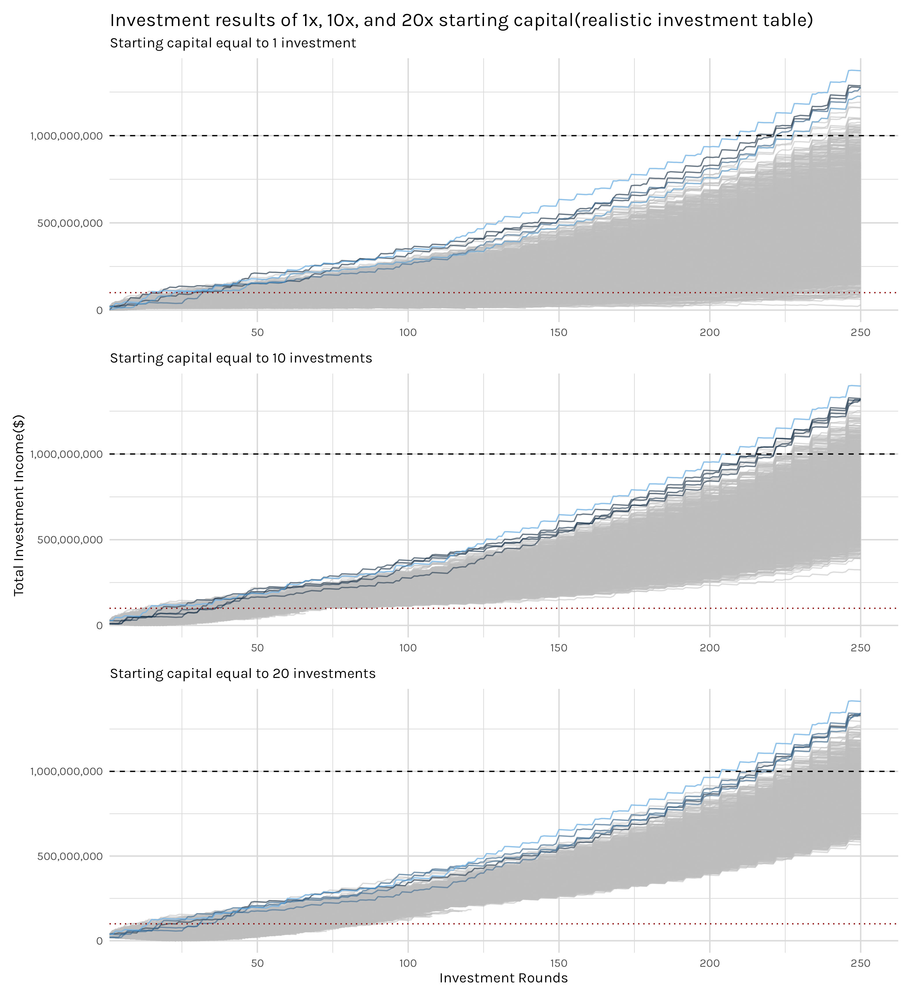
Moving on to our different investment tables, we can see how enormous the outcome between the tables is. If you were to do something like calculate the expected values and expected variance of the different investment tables, you wind up with something like this:
Figure 2 illustrates this fairly well. The realistic table clearly produces the most billionaires, but it also has the densest bunch of lines, indicating that there are a lot of investors that wound up with positive investment results.
Our stingy table investors failed to yield any billionaires, but that’s what I expected when we set the maximum return at 10x. As mentioned in our assumptions, in venture capital, investors expect most of their investments to fail, but they expect a single investment here and there to produce massive (20x+) returns and overwhelm all the other failures. If you don’t have that windfall investment possibility, it is significantly tougher to weather the periods where investments aren’t panning out to get to that next windfall investment. So this is a little more evidence that my simulation is producing somewhat empirically valid results.
Finally, the boom-bust table, somewhat counterintuitively, still produces billionaires, but not nearly as many or as many overall winners as the realistic investment table. I find it pretty amazing that when 99 out of 100 investments result in a loss of all your capital, you can still get lucky enough to become a billionaire if your potential returns on that 1 out of 100 investment are big enough–remember in this case that 1% investment returns 50x.
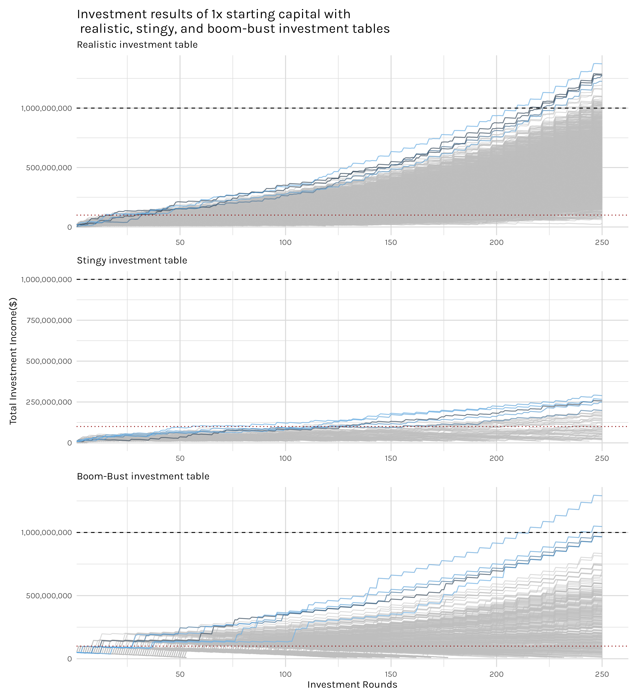
Does having 20 times more starting capital change the outcome for the various investment tables? Yes, but, it’s tough to tell the scale of the change. We see the upward shift and the narrowing that we saw earlier with our higher starting capital amounts and we also see that results in more billionaires and more successful investors. The stingy investors look to have clumped together as well, but we still don’t see the steep growth as with the other investment tables. Possibly this is an indication that the 10x cap on returns is holding down the rate of wealth accumlation in this scenario. Some of these stingy investors still grow their capital from $20,000,000 to over $100,000,000, but that is a far cry from the billions that our other investors are reaching.
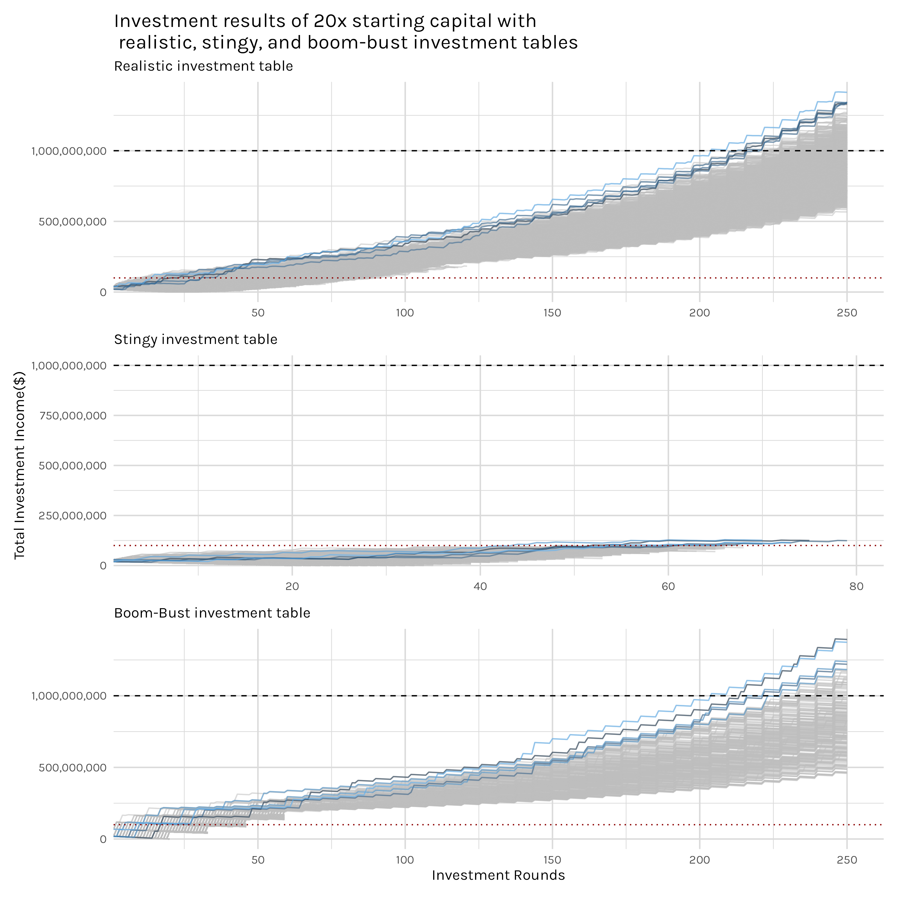
What effect does your investing skill have on your investment outcome? Well, not as much as you’d think. It’s absolutely true that our good investors have more billionaires and earned more on average than the normal investors, but this isn’t an order of magnitude jump. We’ll get into exact amounts later on, but being a good investor versus a normal one looks a lot like the difference between reinvesting 25%(small) verse reinvesting 50%(medium) of your profits as seen in Figure 5.
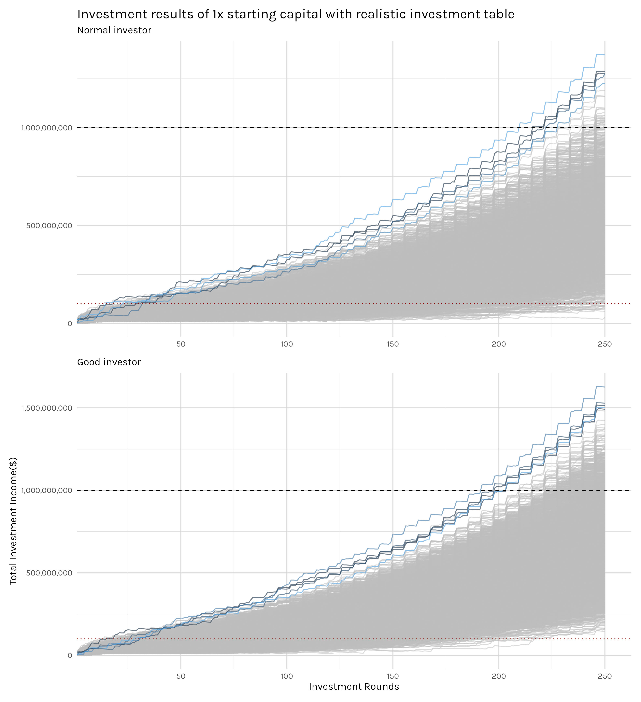
It is interesting that larger reinvestment percentages seem to result in lower final wealth, but after thinking about it, I think there are, at least, two reasons our simulation produces this result. First, if you are reinvesting 75%(large), that means every 6 investment rounds you are earning less interest on your total profit account-since that money is instead in your bankroll. This add up to an immense amount of money over the course of the 250 investment rounds. Second, if you constantly are reinvesting, you are more exposed to the investment randomness. So sometimes you’ll reinvest and that money will be used in another investment that returns 20x, but more often that money will get used for an investment that returns 0x. I honestly think the larger of the factors is the compounding interest, but I didn’t keep track of that quantity and didn’t feel like taking the time to rerun all the simulations, so I can’t put an exact dollar amount on the interest calculation3.
Overall, I this these racing plots illustrate nicely how the successful investors accumulate their wealth. We also get a decent sense of the difference in variance by looking at the width of the investment lines. I certainly wouldn’t make any decisive conclusions just by looking at these plots though. For that, we need to leave our racing plots behind.
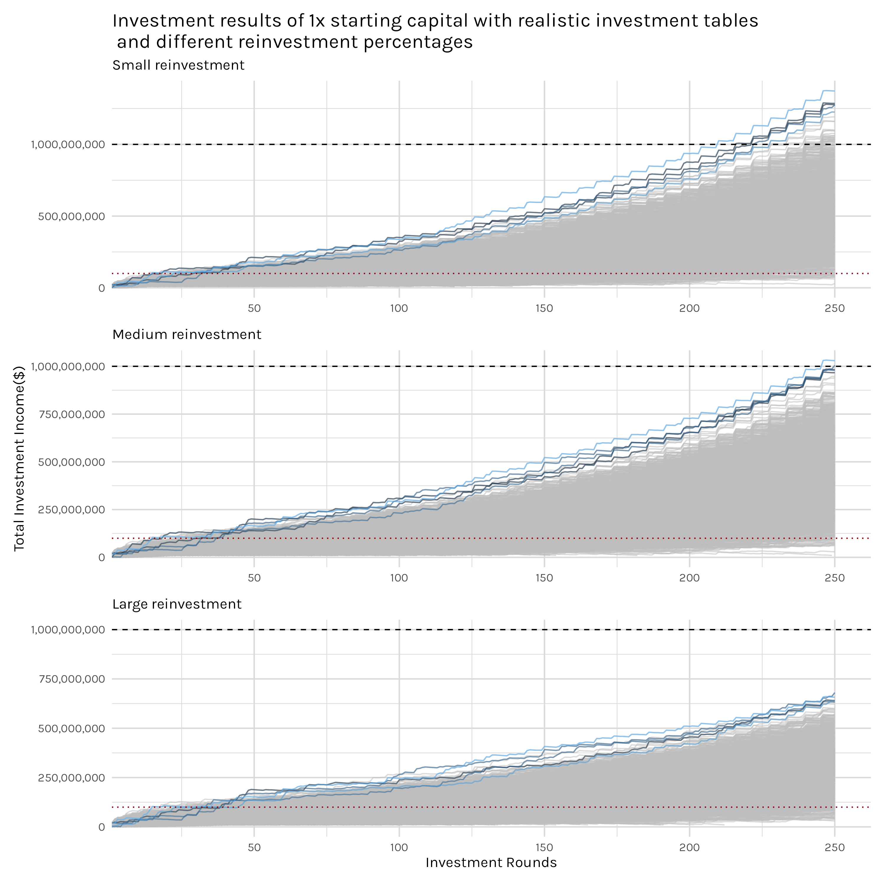
While the racing plots are pretty cool and an OK way to illustrate a bunch of different individual investor results, I’m left a little unsatisfied by them. We got a good sense of what the growth of the successful investors looked like and maybe a sense of how many billionaires were produced, but if you only look at the racing plots, it might seem like every investor in every simulation ends up a millionaire. That is not true, and one option for uncovering this is with our trusty histogram.
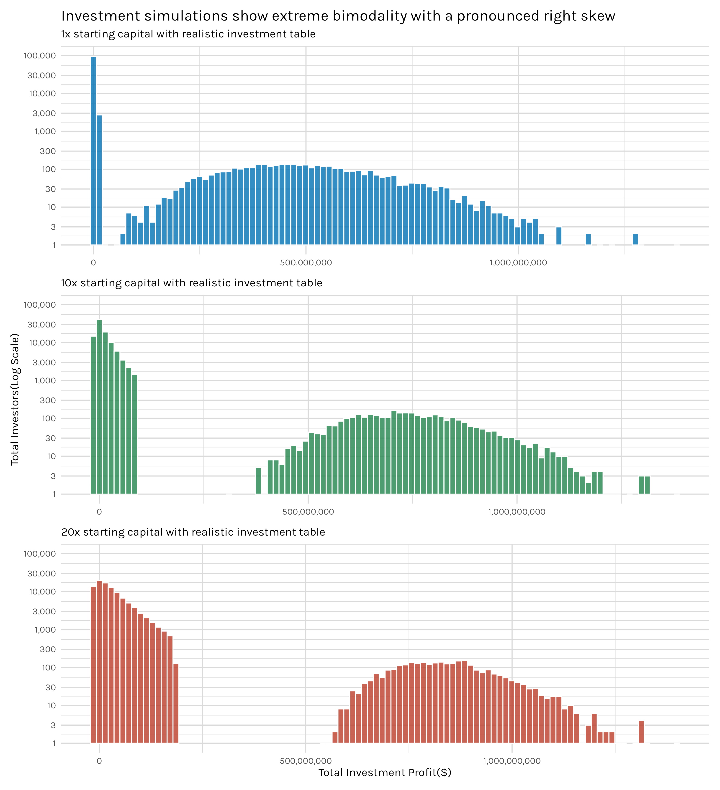
Figure 64 shows our different starting capital options and immediately a more nuanced picture emerges than with the racing plots. First, note that all of the histograms are bimodal. We have a large hump on the left that represents most of our investors-those who generally fared poorly- and then a second, small hump on the right that represents the investors who hit it big. Concretely, for the 1x plot at the top, that first bar of the histogram represents the nearly 80,000(of a total of 100,000!) investors who lost money. The second hump to the right seems huge, but, notice, we are working on a log scale y-axis. Almost all the bars on the second hump contain less than 100 investors a piece, and all of them above the $1,000,000,000 mark are below 10 investors. In other words, the second hump represents a tiny fraction of the total investors.
Second, note that while the 10x and 20x plots are still bimodal, it’s like they have been stretched and shifted to the right. The left hump still represents the majority of the investors, but now, some of those ‘poor’ investors made a good chunk of money. And the right hump, still a minority of investors, keeps getting narrower and shifting more to the right. In other words, the winners are making more money and the losers are both fewer in number and they are losing less that those investors in the 1x plot.
If we take it a step further and ask whether these dynamics change with good investors, the answer seems to be no. Figure 7 shows that good investors appear to push a few more investors into the right hump of the histogram and make those winners make a little more money, but the same patterns are in play. With the 20x investors, this shift appears to be the most exaggerated, but I’d still hesitate to say something is fundamentally different with the good investors. We still have pronounced bimodal data and we still see roughly the same overall shape, just squished upward a tad.
I won’t flood this post with a histogram of every investment scenario, but you see this basic pattern in most of the plots-bimodal with a large majority of investors losing money and a small minority reaping enormous gains.
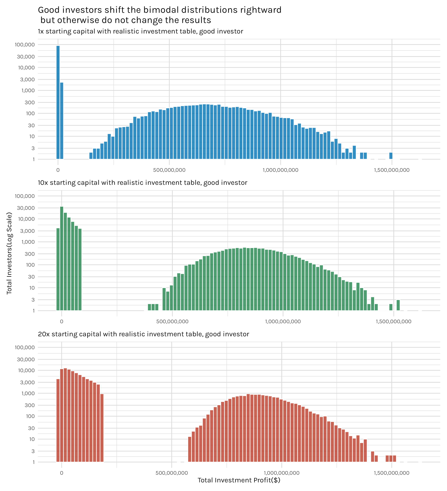
After a lot of meandering, we can finally address our motivating question: are investors who become ultra-wealthy mainly a product of how much starting capital they have? A sensible way to answer this might be to look at the rate of return investors earned.
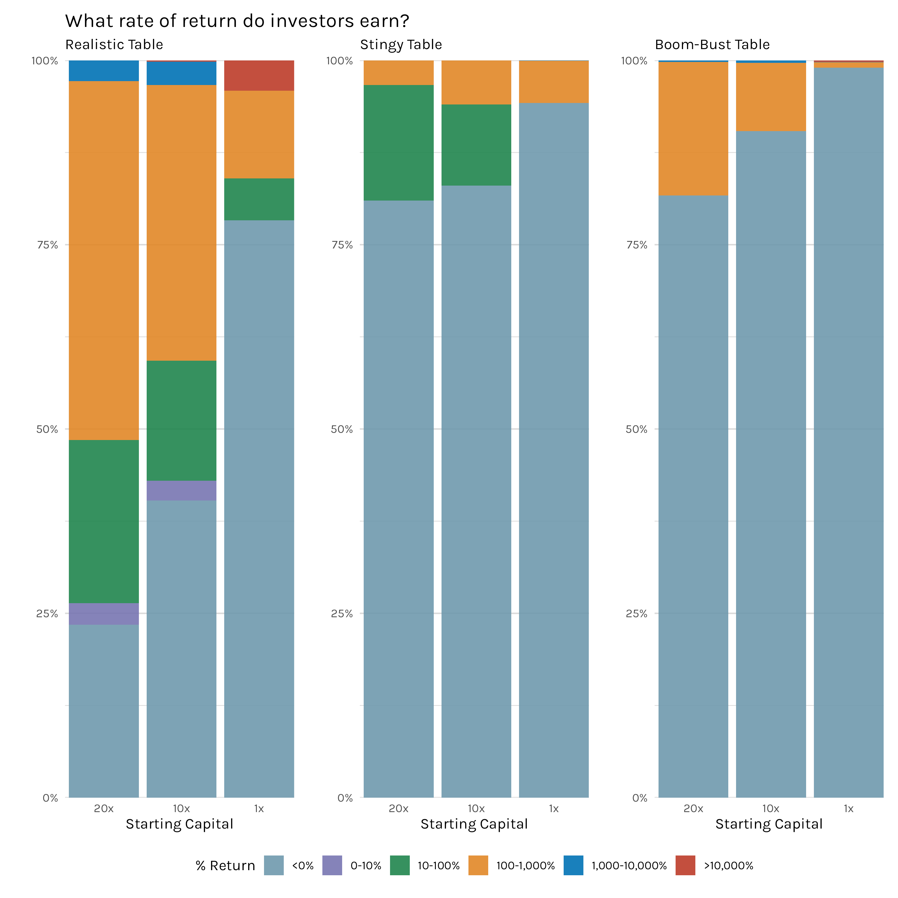
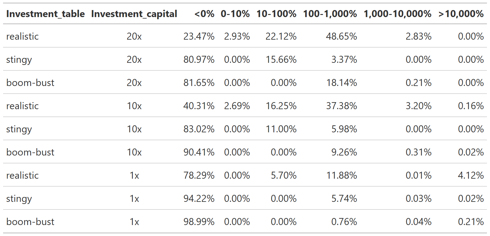
Figure 8 shows investment return percentages for each of our starting capital amounts and for the three different return tables we’ve used in our simulations. What’s perfectly clear is that the number of investors who make money decreases as your starting capital decreases. As we can see in Table 1, the percentage of realistic table investors who lose money drops from ~78% of 1x investors to merely ~23% of 20x investors. Looking at investors who made money, in our realistic investment table, over 50% of the 20x capital group made at least 100% returns on their investments. Putting that in real numbers, that means since they started with $20 million, over 50% of the 20x investors at least doubled their capital to $40 million. Our 10x starting capital group still has nearly 40% of investors making returns of 100% or more, but we have to be careful with our interpretation here. A 100% return for our 10x group is ‘only’ $20 million. For our 1x group, ~15% of investors earned at least 100% returns, but that real dollar amount is now ‘only’ $2 million.
This is good evidence for starting capital being an enormously important factor when it comes to final investor wealth, but if you are like me, you still aren’t entirely satisfied. Return percentages are nice, but as we saw above, 100% return for a 20x investor and a 1x investor aren’t really the same thing–in fact the difference is $38 million! We aren’t asking if the rates of return these investors make are different, we are asking if, at the end of the day, these investors wind up with vastly different levels of wealth. If that’s the real question, why don’t we just tally up the simulated investor wealth and see where we land?
When we tally up what portion of investors reach various levels of wealth, we see more evidence that starting capital plays a critical role in final investment wealth. As we can see in Figure 9, most investors with 10x or 20x starting capital finish, at minimum, with wealth in the millions, while the vast majority of 1x investors do not. In fact, as you can see in Table 2, not even 5,000 1x investors reach a net worth of more than $10 million, while the 10x and 20x investors place ~60,000 and ~90,000+ respectively in the decamillionaire+ club. Perhaps most glaring is the discrepancy in the number of billionaires produced. You can’t even see the sliver of billionaires in the 1x bar(a mere 30 investors), and while the 10x and 20x slice is admittedly still small(as you would expect), they still produced 6-10 times more billionaires than the 1x group.
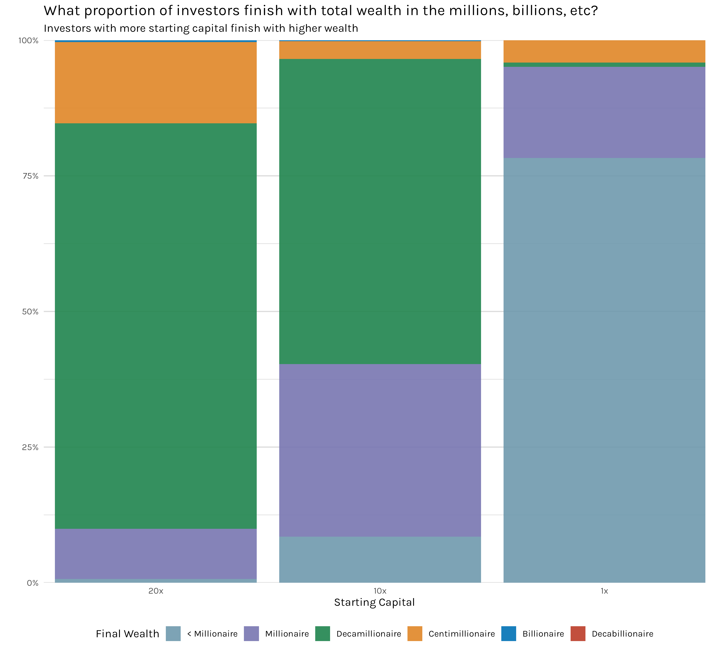
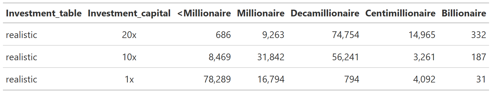
Perhaps this is even clearer if we take the data from all our simulations(except the handful with different reinvestment percentages) and tally up how many millionaires, billionaires, etc we have. That is 1.8 million simulated investors with 600k investors for each starting capital amount. Figure 10 is the result. You can see immediately that the overwhelming majority of centimillionaires and billionaires came from 10x or 20x capital simulations. This isn’t something that is statistically marginal and we should probably do a hypothesis test or something to be on more firm footing. In my opinion, this is one of those ‘oh, this is obviously true’ plots.
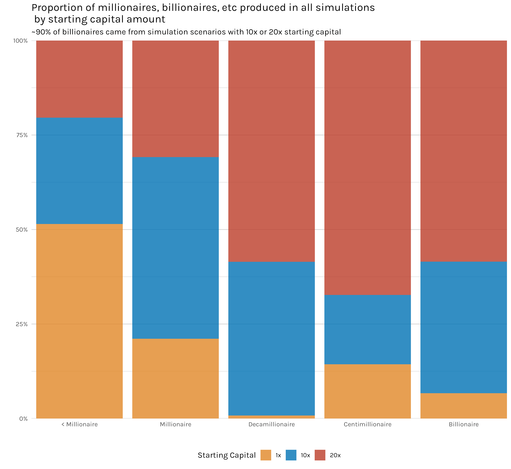
Figure 10 seems like pretty strong evidence that more starting capital results in more billionaires. But maybe, at the end of the day, the adage isn’t meant to say that more investment throws means more billionaires, but instead more throws means you make money more often (which would of course wind up at the same place of more billionaires, but ignore that for now). Is that always true? Well, according to the simulation results, yes. If you look at Figure 11, if you are investing with 20x starting capital, it’s not a sure thing you are going to make money as an investor, but it’s basically a coin flip. Intuitively, this makes some sense. You have a sizable number of investments you can make before you run out of your initial capital, so even when you are no better an investor than anyone else, you simply have more investments you can make to get lucky and land on an investment that pays out. On the other hand, the 1x investors, if they lose on that first investment throw, they are out of money. That’s why you see nearly 80% of 1x investors losing money. By definition, in our simulations they aren’t any worse at investing than the 10x or 20x investors, but, unlike the 10x or 20x, unless and until they hit a winning investment, every single investment roll is basically an all in. Some of those 1x investors will still get lucky and hit a good investment on their first try, paying out, say, 20 times their investment, but most of them will not and are forced into this repeating all or nothing position.
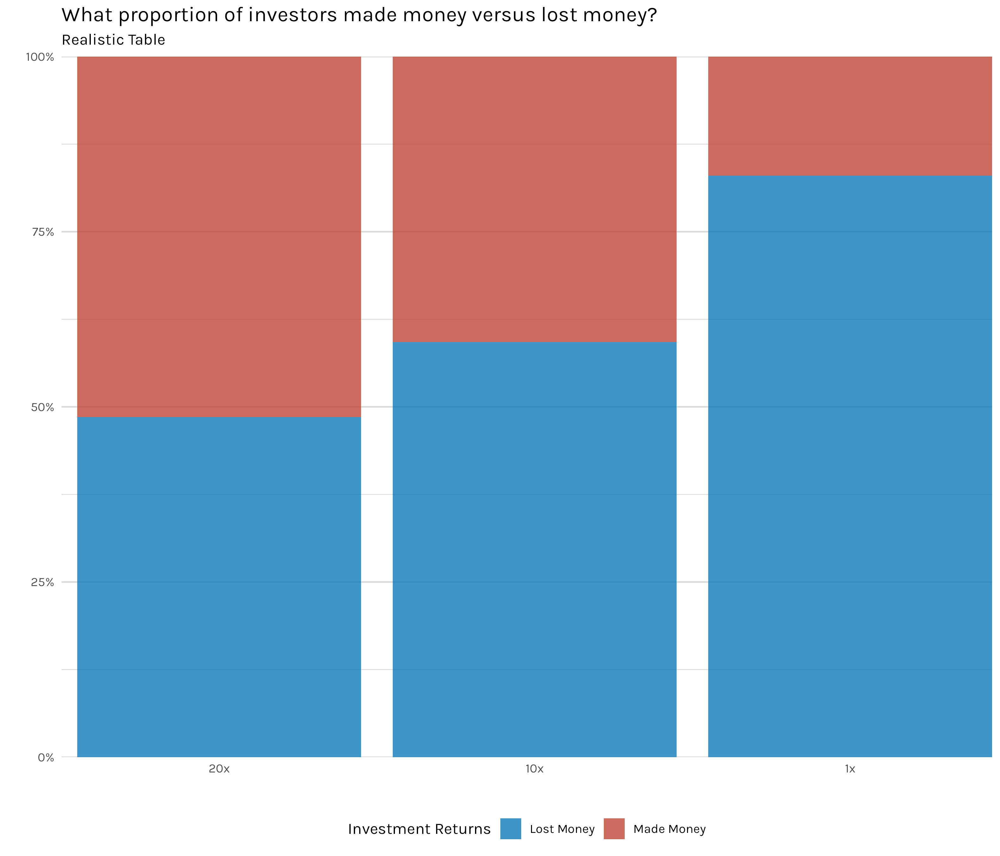
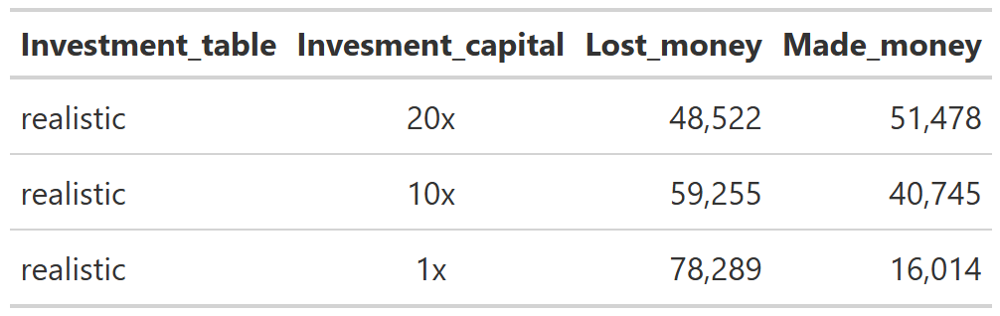
What if a 1x investor does get lucky and lands a 20x return on their first investment? In a sense, that would transform their situation from having to go all in every investment to something more akin to what the 20x investors are doing. We can actually look at this scenario by doing some filtering to look at just those 1x investors who got the maximum 20x return on their first investment of the simulation. This is ~2,000 investors. How did those investors end up faring? Pretty well according to Figure 12. These results look similar to the 20x capital investors we examined earlier. These appear even better, but that’s mainly because this is a small (Figure 12 only represents about 2,000 investors, while the bars from Figure 9 represent 100,000), and biased (Figure 12 is essentially showing the results of investors that we already know have won at least once) sample of the total investor group.
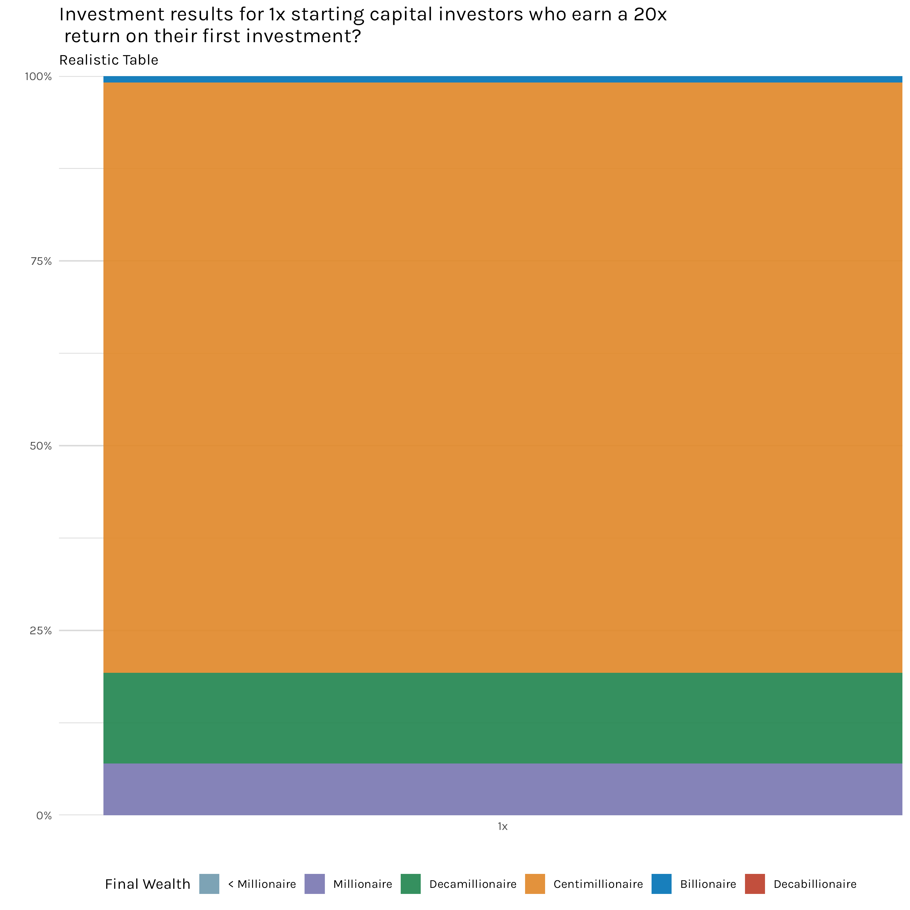
So at the end of all this, what have we learned? In a lot of ways, nothing here is especially surprising. People who start with more money tend to end with more money. We all kind of know this-that’s the beauty of compounding interest, right? But is the spirit of the adage true? Are wealthy investors simply getting more rolls of the dice? I think the results here lead me to a very qualified, yes. Your starting capital, moreso than whether you are a good or bad investor, or what the specific return tables are, or how much you are reinvesting determines your investment results. Again, this isn’t to say that if you start with a lot of capital you will 100% become a billionaire. A glance at the histograms shows how few of even the 20x investors wind up billionaires. But those with greater starting capital earn positive investment returns at a higher rate and earn larger investment returns on average. Investors with the lowest amount of starting capital can still get lucky and become billionaires, but it happens much less frequently and the overwhelming majority of centimillionaires and billionaires come from the 10x and 20x starting capital investors.
I think an important aspect of this is that our investment tables, with the exception of the stingy tables, allow for the possibility of massive returns–20x or 50x. This is not some wildly unrealistic number. Plenty of unicorn companies return multiples of that scale. In the venture capital world it’s pretty widely accepted that if you have a portfolio of ~20+ startups, most of them will fail to return anything or will return modest amounts, but you can still be extremely successful if just one of those companies returns 20+ times your investment. I think our simulations demonstrate that. In a sense, you are just trying to play the game as long as possible, because if you do, eventually you’ll land on the big return multiple. And once you do that, it’s rinse and repeat-invest in a lot of companies that fail and hope you have enough capital in reserve to stay afloat until that next 20x or 50x return. When the return multiples are lower, as in the stingy return table, investment returns are much more similar between the different investor groups.
Perhaps the most interesting part of this whole simulation is observing how these massive wealth disparities can arise from scenarios with identical starting points. The fact that our 1x investors all have the same return probabilities, starting capital, and investment strategies, but ~80% of them will lose all their money while 31 of them become billionaires is really startling. The only difference between them is that those 31 investors got extremely lucky. They weren’t smarter, harder working, or even wealthier. They were just lucky. I think most people understand luck plays a roll in all this, but it’s different to see the numbers as that plays out.
Finally, I just want to acknowledge again how simplified and unrealistic this investment scenario is. Nothing like this could happen in the real world, but that doesn’t mean it can’t yield useful information. No one may be able to invest like this, but seeing what happens in a world where they could is useful. Everyone knows the playing field isn’t even, but let’s pretend that it is and see what happens. Our result, that simply having more investment chances results in more wealth in this simplified world, is useful information. Our world may not function like that, but knowing that there exists a world where luck–both in your investing and in the privilege of your circumstances–can mean the difference between bankruptcy and billions can certainly change your views on wealth, taxes, inheritance, etc.
Anyway, I hope you enjoyed following along. If you want to reproduce this analysis–or even better extend it–all the code used to run the simulations and build the plots can be found on github. Until next time!
I will refer to a given return vector and its accompanying probability vector as the investment table of a simulation. Hopefully I can do so consistently!↩︎
I think there may be the data I need in the full simulation results to calculate this number. If I get around to it I’ll edit this post and make a note of it.↩︎
Do you notice that the x-axis on the histograms seems to contain gaps-almost like they’ve been painted over with whiteout? That is an artifact of plotting these histograms with the y-axis on a log scale. The y-axis starts at 1, not zero, and so bins on the histogram with a single count(of which there are many) are there, but only show up as a tiny blip, blotting over some of the x-axis. This is annoying, but I think this tradeoff is worth it to have a more interpretable y-axis and plot otherwise.↩︎